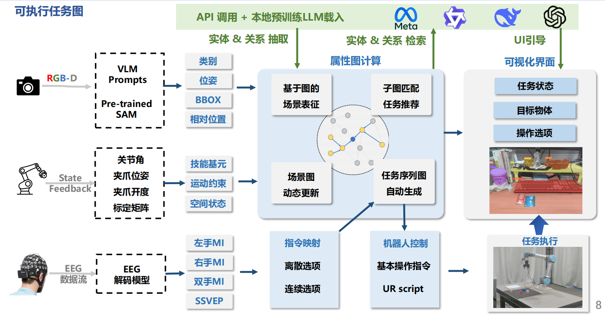
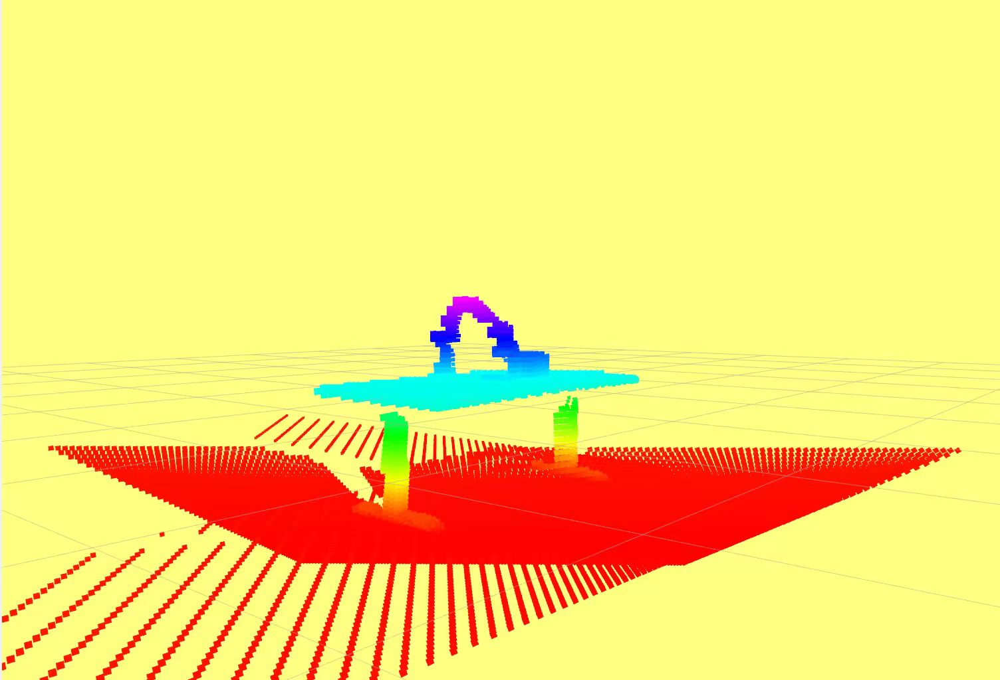

01 项目目的
目标：识别场景为点云，图网络 LLM 推荐执行任务，用户用脑机选择任务，机械臂抓取物体特征点放到另外特征位置执行任务。
科研经历
目标：识别场景为点云，图网络 LLM 推荐执行任务，用户用脑机选择任务，机械臂抓取物体特征点放到另外特征位置执行任务。
目标：识别场景为点云，图网络 LLM 推荐执行任务，用户用脑机选择任务，机械臂抓取物体特征点放到另外特征位置执行任务。
LLM+LightGCN 分类操作任务，实现给一个没见过的物体，也能想到可能对应的任务让用户来选。
相机标定和 esdf 建图得到物体点云位置的仿真工作。
EEG 读取脑电信息输出用户的选择的模型训练。
机械臂执行这部分的仿真工作。
尝试 Semantic Information+LightGCN，最后实现效果超过原算法。
双相机标定仿真一开始无法重合。后面是发现仿真器中跟现实中相机 z 方向不一样。
机械臂规划部分的代码，调试了很久。
图片 01

图片 02
